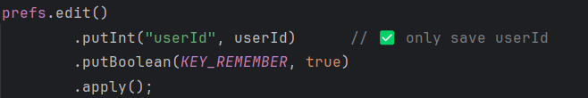
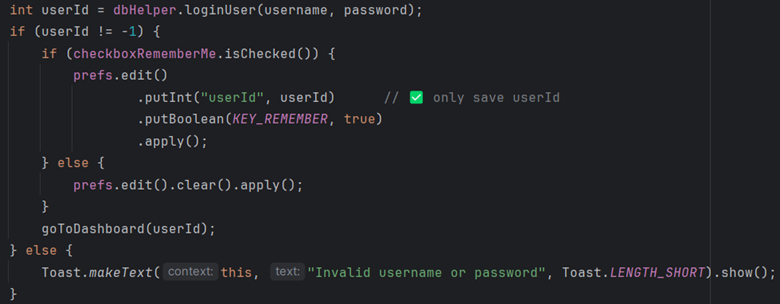

Android Weight Tracker App
A mobile health app built for CS-360 and enhanced for CS-499 to support secure login, goal setting, and user data visualization. This project serves as the Software Engineering and Design artifact in my capstone portfolio.
Original Functionality
- User registration and login with hashed passwords (BCrypt)
- SQLite database for storing user, weight, and goal data
- Weight graph using MPAndroidChart
- SMS alerts upon goal achievement
- Modular activities for login, dashboard, and registration
Enhancements for CS-499
- Switched to EncryptedSharedPreferences for secure local storage
- Implemented login lockout system after failed attempts
- Added strong password enforcement via regex
- Moved database operations to background threads
- Normalized input (e.g., lowercase usernames/emails)
- Improved documentation with comments and refactored logic
Skills Demonstrated
- Secure software design and encryption practices
- Performance optimization via threading
- Defensive coding and validation
- Professional-quality documentation
Course Outcomes Met
- Outcome 4: Innovative use of secure tools and techniques (EncryptedSharedPreferences, password regex)
- Outcome 5: Anticipating security vulnerabilities (brute-force lockout, input sanitization)
- Outcome 2: Communicating enhancements clearly via in-code documentation
Visual Examples (Original Implementation)
SharedPreferences stored insecurely
Missing login lockout mechanism
Unnormalized username/email input

X-Axis mismatch in chart labels

Plain SharedPreferences for SMS opt-in

Minimal commenting in chart logic